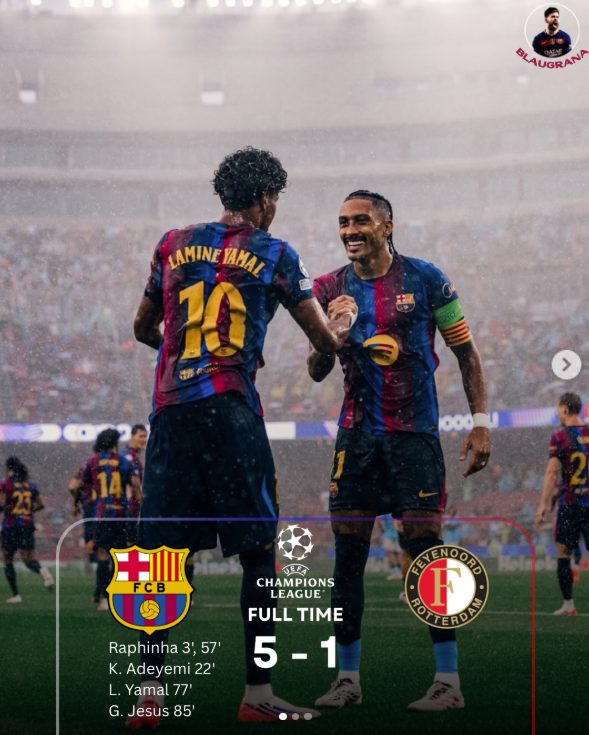
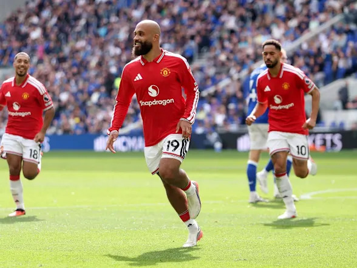
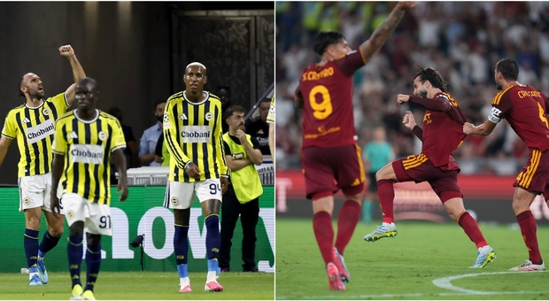

昨晚竞火又3中3全红本周9中8状态火热！今晚火线红单继续约~~~
昨晚欧冠联赛，实力较强的一方都顺利拿到了3分。如那不勒斯VS阿森纳一场，凭借厄德高第75分钟的进球，阿森纳客场1-0力克对手，新赛季各项赛事5连胜，且有4场一球不丢。那不勒斯则是遭遇3连败！
实力悬殊的一场，巴萨主场5-1大胜费耶诺德，拉菲尼亚梅开二度，亚马尔则是助攻梅开二度，还自己打进一球。新赛季正式比赛5连胜，且有4场比赛均打进5球，强大的进攻能力让他们大步前进！

其他场次，利物浦主场2-1逆转马竞技，拿到宝贵3分！里斯本主场3-1逆转加拉塔萨雷。
今晚欧冠，关注曼联主场迎战阿塞拜疆的沙巴巴库。新赛季前3轮英超，曼联仅取得1胜1平1负的战绩，表现不及预测。周末英超，曼联还将在主场迎来同城死敌曼城，后者4连胜来势汹汹，曼联估计会有一定分心。本场比赛，指数多为深盘，曼联未必能大比分赢球。当心！

另一场欧冠，关注费内巴切主场迎战罗马。费内巴切在附加赛中的表现绝对让人眼前一亮。他们不仅展示了极强的韧性，而且在两回合的硬仗中暴露出极高的战术执行力，这也让罗马主帅加斯佩里尼在赛前新闻发布会上明确表示：“费内巴切绝不是一个好对付的对手，尤其是在他们的魔鬼主场。”

欢迎大家收藏宝哥首页，请分享给好友或转发到朋友圈，让更多人看到我。
安卓用户可以下载APP，更便捷看到宝哥每天的动态！